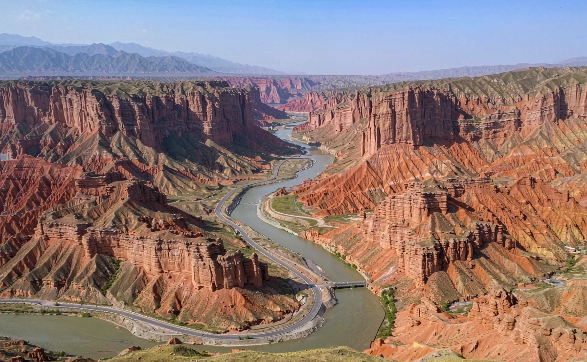
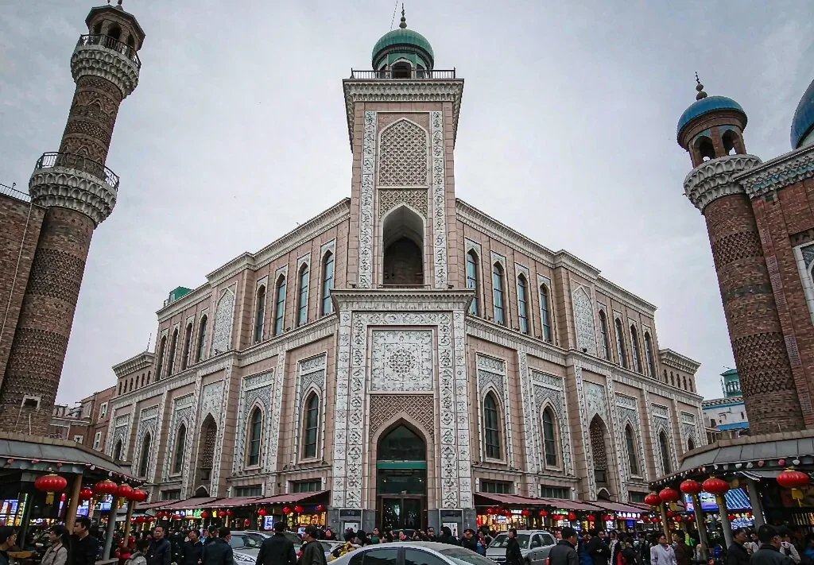

Highways
Highways
City walk
The Duku Highway starts at Kuitun
Not a tourist city — the most useful stop before and after a long road, with the earth split open nearby.
The route at a glance
Kuitun's points are spread out: use a vehicle between them and your feet within them. Just passing through? Dinner on Tuanjie Street plus sunset at the canyon is enough.
- 19:00–21:00 Runmin riverfront
- Morning: Reclamation Culture Square / 7th Division Museum
- Dinner: Tuanjie Street
- Sunset: Kuitun River Grand Canyon (Hongshan / Anjihai)
Stop 1: Runmin riverfront (evening)
This is a city grown out of the gobi, so its greenery is itself the sight. Walk the riverside path as the temperature drops and locals come out — the easiest way to feel the place's everyday rhythm.
Stop 2: Reclamation Culture Square & museum (morning)
Kuitun is a classic reclamation town: mid-20th-century settlement determined its street grid and its population. To understand why there is a city here at all, the museum beats any viewpoint.
- Opening hours shift by season — check before setting out
- Worth an hour if modern history interests you
- Photography is restricted in some galleries; follow on-site signage
Stop 3: Tuanjie Street food (dinner)
- Eat: spicy chicken, big-plate chicken, hand-pulled noodles, grilled lamb
- Portions are large — two people can share one main plus a side
- Local life runs late; it is liveliest after 19:00
Stop 4: Sunset at the Kuitun River canyon
South-west of town, the river has cut ochre and pale strata into a deep gorge, most legible in low angled light. This is not a developed scenic area and some edges have no barrier — follow your driver and on-site instructions, and never cross a line for a photograph.
Safety: canyon rims are loose soil. Shoot only from opened areas, and stay back from edges after rain or in strong wind.
Practical information
- Supplies: top up water, snacks, medicine and cash in town before the Duku
- Fuel: fill up before long sections — mountain supply points are far apart
- Climate: dry with intense sun; bring both sun protection and moisturiser
- Transport: taxis within town; a private vehicle for the canyon and Dushanzi
Where it sits: we usually place Kuitun after the northern Duku and before returning to Ürümqi — a short driving day that doubles as resupply and rest.
Keep reading
Further reading
Read the Duku Highway guide and the starting-city notes before you go.
Highways
City walk Index
IndexAdding the Duku to your route?
We will coordinate Kuitun, Dushanzi and that year's opening dates.
Get a quote